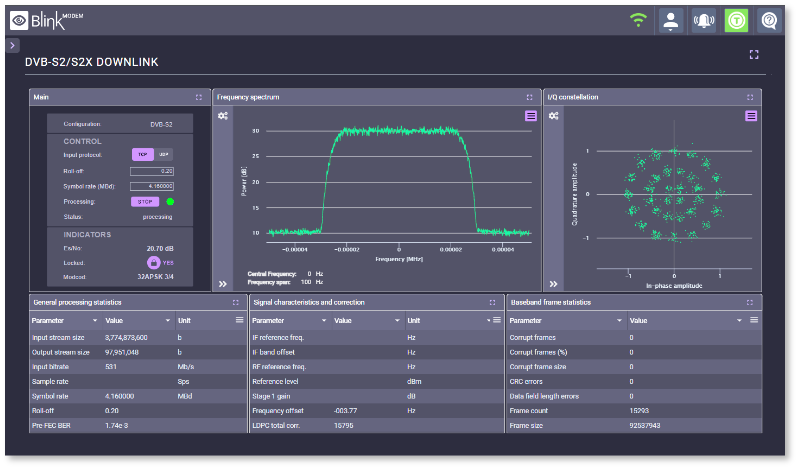

Scope the pilot
Map the SATCOM OSS backlog, Blink web interface touchpoints, and AWS AMI runbooks into a small pilot plan.
Prepared for Tomislav Nakic-Alfirevic
Why we're here: Amphinicy is hiring a Fullstack Python Developer for multi-orbit SATCOM OSS. Blink is also moving through AWS and modem releases. That usually means the core team needs help.

The hiring signal says Amphinicy is scaling engineering around SATCOM OSS, not just filling a seat. Blink already has AWS AMI delivery, a web control interface, REST M&C, and recent modem release work. That mix creates pressure across Python services, cloud setup, tests, and operator flows. If the same team handles roadmap and every integration detail, pilots can slow down. Tomislav's Blink scope needs extra hands that can join without lowering mission quality.
Blink AMI notes say UDP contact processing may need a manual stop unless automation is tailored.
Turn that into a small pass-state service with clear retries, report checks, and operator logs.
The public Blink page still has heavy image work on mobile, especially around hero media.
Compress hero and offscreen media so demo links feel faster before sales calls.
Use a dedicated squad under Amphinicy's product owner for a six-week pilot. The squad adds delivery capacity while your team keeps satellite-domain decisions.
Map the SATCOM OSS backlog, Blink web interface touchpoints, and AWS AMI runbooks into a small pilot plan.
Build Python services and React screens for the first OSS workflow, with API contracts reviewed by Amphinicy engineers.
Add automated tests around pass handling, report generation, GPU profiles, and edge cases from recent Blink AMI notes.
Harden Docker, Kubernetes, and CI jobs, then hand over docs, demos, and a measured release checklist.

Telecom web and DevOps work for real-time network integrity checks, problem tracking, and clear reporting.
Read case study
Telecom monitoring software that helps teams maintain complex infrastructure and react to live operational change.
Read case study